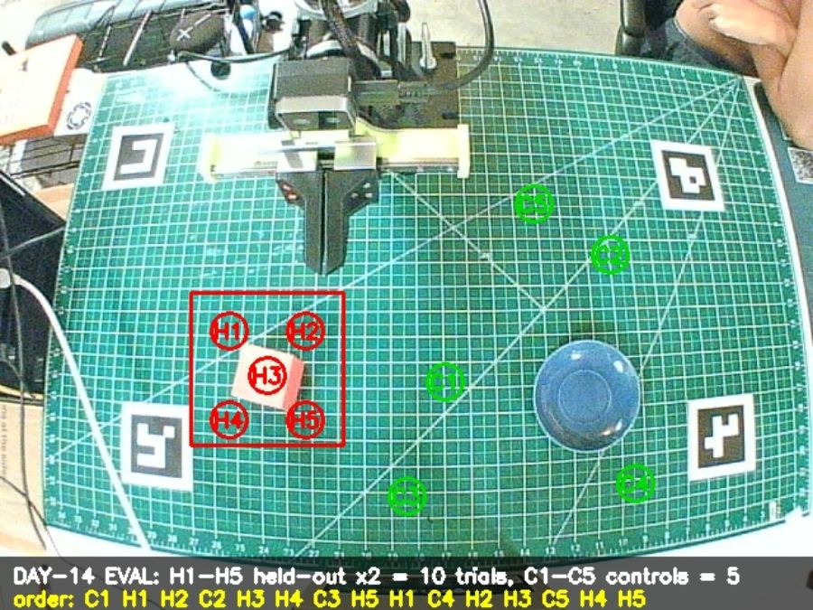
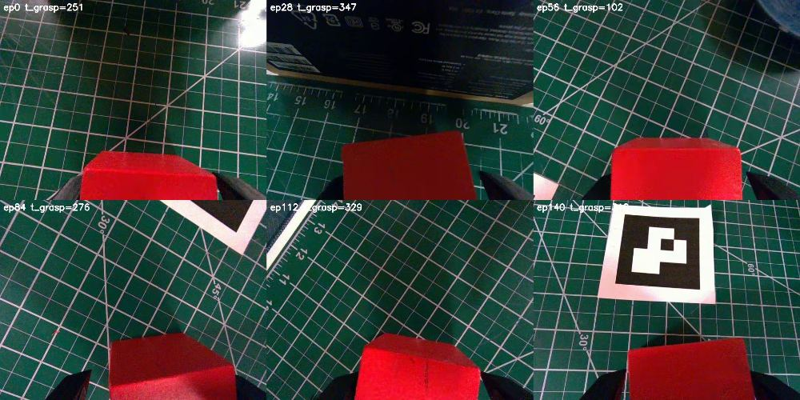
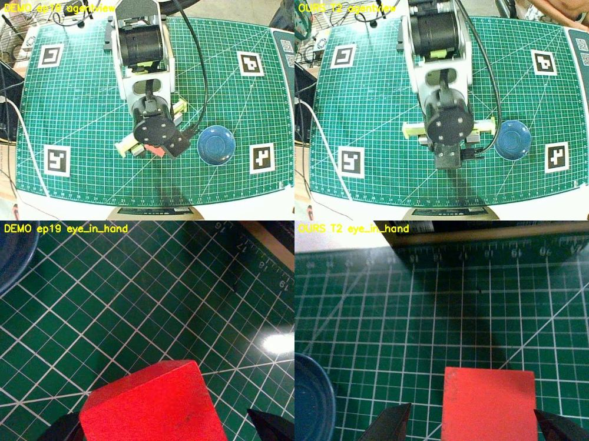
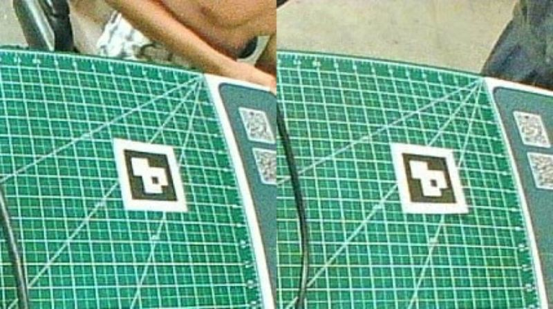
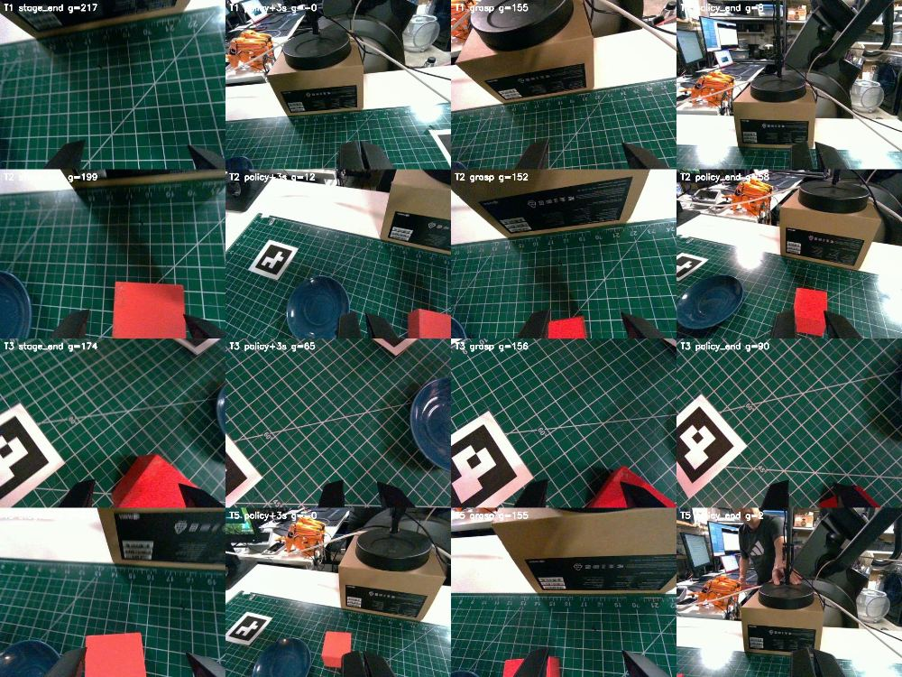
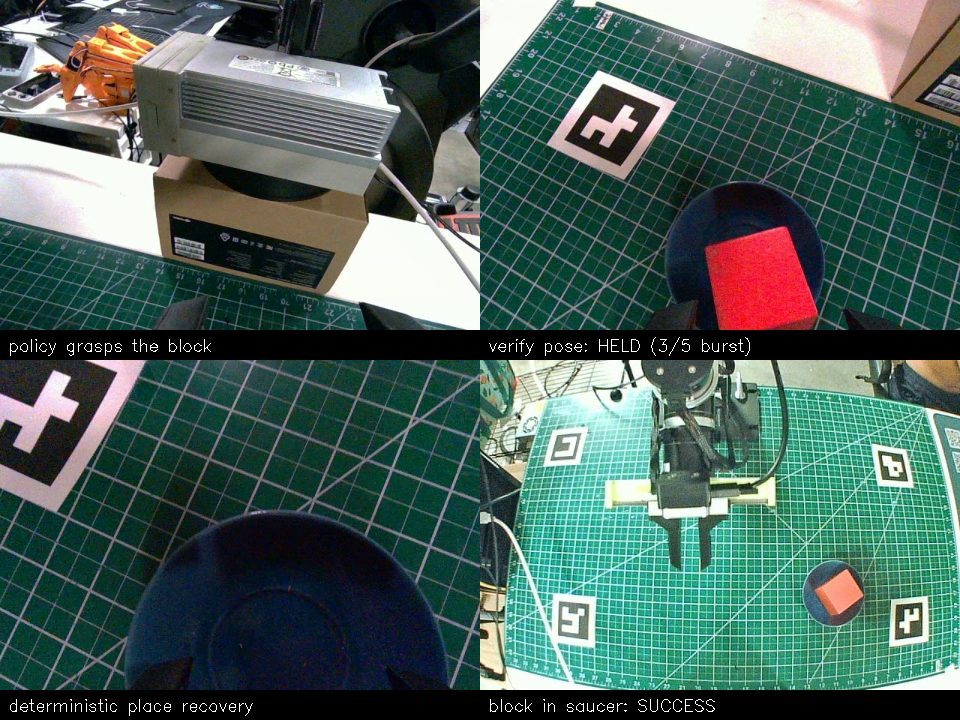
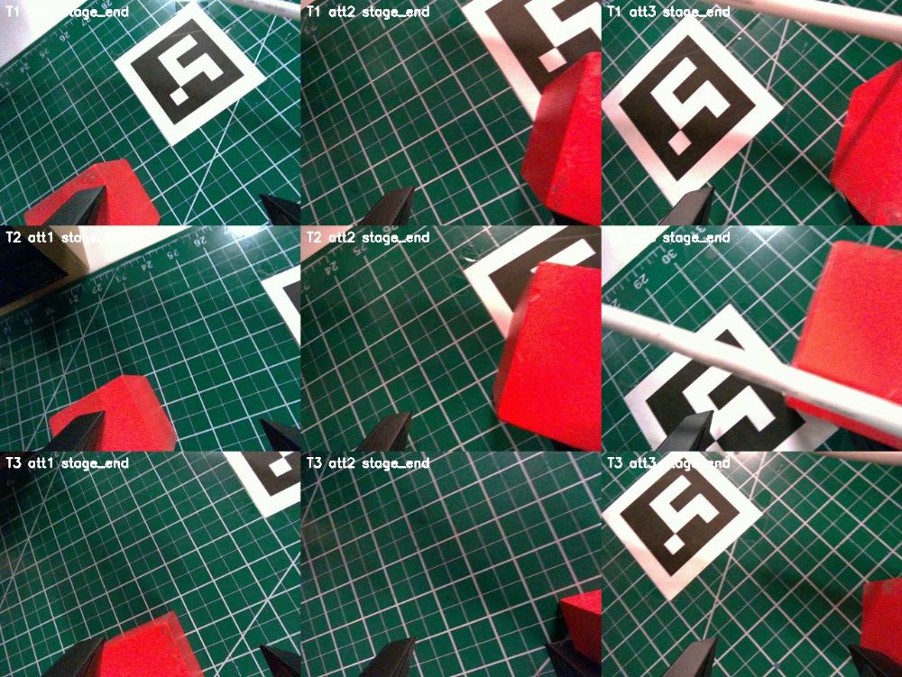
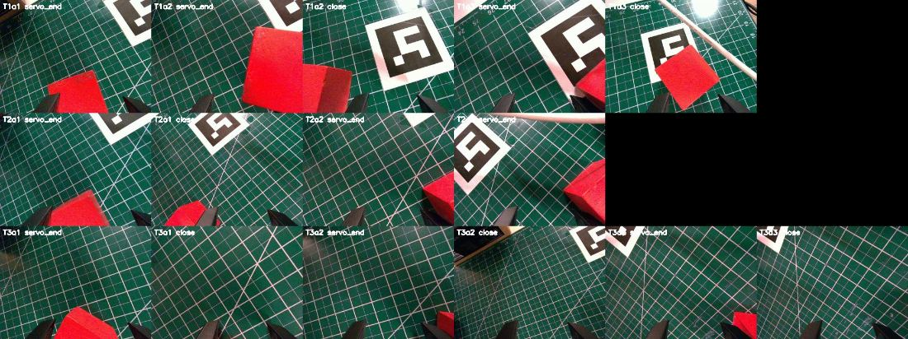

| In-distribution (controls / training area) | Held-out zone | Safety events | |
|---|---|---|---|
| Bare frozen policy (Day-14 counted run, n=15) | 3 / 5 (60%) | 0 / 10 | 0 (counted run) |
| Harness (shakedowns 1–5, n=16) | 4 / 7 (57%) | 0 / 11 | 0 |
A Seeed reBot B601-RS follower arm (CAN, six arm joints + gripper) with a leader arm for teleoperation,
a fixed top-view webcam (agentview, 640×480@30) and a wrist-mounted RealSense D405 in color-only mode
(eye_in_hand). One red 40 mm block, one saucer fixed at a witness mark (agentview pixel (464,315)).
The workspace carries four ArUco landmarks; every session passes a gate stack: version pins, camera reset + settings
re-application (D405 one-session-per-reset firmware behavior), a geometric drift gate (≤3 px), and a backup-target check.
A lighting-parity rule (train and evaluate under the same evening lighting) was added after a 13-trial evaluation
was voided by afternoon glare that washed the block out of the policy’s color distribution.
Training corpus: 168 verified teleoperated episodes (96,058 frames), block placed freely across the mat with a
rectangular held-out zone — agentview (150,230)–(270,350) — deliberately never demonstrated.
Primitive: ACT (52M parameters) trained 100k steps to loss 0.062 (checkpoint
artifacts/act_b601_v1_20260812/checkpoints/100000), then frozen.
All motion after Day 14 runs under a per-joint command-rate limiter derived from the demonstrated envelope and a
divergence guard (abort on |command−state| sustained >15° for 1 s), added after a policy-driven velocity-snap
event broke a trial and tripped the PSU.

Protocol: 15 operator-initiated trials, interleaved held-out/controls, 40 s per trial, scored on “block ends in the saucer.” Redos were declared before running. Result: held-out 0/10, controls 3/5 — gate (≥70% held-out) FAILED, freezing the primitive per plan and motivating the harness.
| # | Target | Result | Video (dataset local/eval_b601_v1) |
|---|---|---|---|
| 1 | H3 | fail | episode 16 |
| 2 | C1 | PASS | episode 17 (sustained held-verdicts confirm carry) |
| 3 | H2 | fail | episode 18 |
| 4 | C2 | fail | episode 19 |
| 5 | H3 | fail | episode 20 |
| 6 | H4 | fail | episode 21 |
| 7 | C3 | fail | episode 22 |
| 8 | H5 | fail | episode 23 |
| 9 | H1 | fail | episode 24 (C4 accidental-reset redo sits nearby; C4 pass anchored at ep. 25) |
| 10 | C4 | PASS | episode 25 (held-verdicts confirm) |
| 11 | H2 | fail | episode 26 |
| 12 | H3 | fail | episode 27 |
| 13 | C5 | PASS | episode 28 (held-verdicts confirm; ends early on success) |
| 14 | H4 | fail | episode 29 |
| 15 | H5 | fail | episode 30 |
Episodes 0–12 of the same dataset are the lighting-voided first attempt (afternoon glare; drift gate is blind to photometrics — now a standing rule). Episodes 13–15 are the night session containing the first-ever policy success (C1) and the H2 velocity-snap safety event that led to the rate limiter. The trial↔episode mapping for passes is independently confirmed by the grasp verifier’s sustained held-verdicts appearing in exactly the three pass episodes (17, 25, 28) and in none of the fails or voided trials.
Loop per trial: look (agentview red-blob localization on the drift-gated frame) → stage (block pixel → pre-grasp joint pose from a table built out of the corpus itself) → invoke the frozen policy (40 s budget) → lift to a verify pose → verify (wrist-camera + gripper-band check, majority of a 5-frame burst) → branch: success / deterministic place recovery (saucer never moves) / re-ground and retry, ≤3 attempts, then a graceful give-up. Every command — staged moves and policy alike — passes the rate limiter and divergence guard. All components were test-driven offline before live use:

Protocol caveat, stated up front: these were iterative debugging rounds, not a matched counted protocol. The harness configuration changed between rounds (each change evidence-driven and committed), the operator’s position changed after round 1, and no Day-18 counted comparison was run. The aggregate numbers are therefore indicative, not confirmatory.
Both passes were the policy completing the task from the staged start — including at a position near C2, which the bare policy had failed on Day 14. But telemetry showed every trial began with the policy retreating from the staged pose. GPU occlusion probes on the frozen policy isolated the trigger to a 107×120 px agentview region containing the operator’s arm leaning over the mat: swapping that one patch flips the policy’s plan between RETREAT and CONTINUE (state, gripper and wrist-roll hypotheses were counterfactually refuted). Mechanism: corpus episode tails contain the operator reaching in after the place, so “person near mat” became a learned end-of-episode cue. Standing rule since: operator out of frame whenever the policy drives.



5 of 7 policy segments now continued directly from the staged pose (0 of 7 in round 1). Trial 2 is the harness thesis working end to end: the policy grasped but failed to place; the verifier read HELD; the deterministic place recovery scored it. Trial 3 was a clean policy success. The two failures (one training-area, one held-out) were near-deterministic grasp misses a few centimeters off, repeated identically across retries.

Round 3 failed on two compounding motion defects, both operator-reported and telemetry-confirmed: staged approaches ran at half the safety envelope (which is the 99.9th-percentile of demonstrated speed — half of that is still a lunge), and the open-loop move let the arm arrive before the slow gripper had opened, plowing closed fingers into the cube. Fixes: open-first staging (closed-loop on physical gripper state) and quarter-envelope approach speed. Round 4 then isolated the deeper problem: with motion clean, all nine staged poses in the held-out hole missed by centimeters in varying directions — open-loop extrapolation cannot stage where no demonstration went — while the block sat in the wrist camera’s view in nine of nine attempts.

A feedback servo (drive the block’s wrist-frame centroid to the demonstrated pre-grasp target) was added after round 4. Its first field version under-acted — budget exhaustion and stale-image oscillation, both visible in the traces — but the round still produced the decisive datum: two attempts ended with the shoved cube 7–10 px from demonstrated coverage, staging essentially perfect, and the policy still missed. Across rounds 2–5 the frozen policy made ~15 grasp attempts at or near held-out positions with zero grasps. Delivery quality is not the bottleneck; the policy’s final five centimeters are miscalibrated where it never saw data, and staging/retries multiply a per-attempt probability that is approximately zero there.

| Measure | Bare policy (Day-14) | Harness (rounds 1–5) |
|---|---|---|
| Held-out success | 0 / 10 | 0 / 11 |
| In-distribution success | 3 / 5 | 4 / 7 (one via autonomous save; one at a Day-14-failing position) |
| False “success” declarations | n/a (human-scored) | 0 / 16 (verifier + saucer check) |
| Safety events | 0 in counted run (1 in prior night session, pre-limiter) | 0 across all 16 trials |
| Damage-free give-ups | n/a (fixed 40 s timeout) | 12 / 12 failures ended in a graceful, homed give-up |
On the HarnessVLA thesis. The thesis predicts that staging, verification, re-grounding and retries make an imperfect frozen primitive substantially more reliable. On this rig, with this 168-episode ACT primitive:
5dbecc0) but never tested on hardware. It is the designed next experiment, not a result.
Full provenance lives in the repository registries: b601/registry/experiment_registry.md (every run and
decision), risk_log.md (failure modes and standing guards, including the orphan-row index corruption, the
photometric blindness rule, the velocity-snap safety event, the self-consistent-but-wrong anchor lesson, and the
operator-in-frame confound), and protocol_deviations.md (five vendor patches, each committed and re-pinned).
The unpowered test suite stands at 570 tests. All trial telemetry (per-tick command/state JSONL + both camera MP4s per
trial) is under outputs/harness_trials/, backed up to /mnt/nvme3/b601/harness_trials/;
evaluation datasets under datasets/eval_b601_v1 (backed up likewise).
| Session | Directory / dataset | Trials | Outcome |
|---|---|---|---|
| Day-14 voided (lighting) | datasets/eval_b601_v1 eps 0–12 | 13 | voided |
| Day-14 night (pre-limiter) | datasets/eval_b601_v1 eps 13–15 | 3 | C1 first pass; H2 safety event |
| Day-14 counted | datasets/eval_b601_v1 eps 16–30 | 15 | held-out 0/10, controls 3/5 |
| Shakedown 1 | outputs/harness_trials/20260822_213019 | 5 | 2 pass (training area) |
| Shakedown 2 | outputs/harness_trials/20260822_225234 | 4 | 2 pass (incl. autonomous save) |
| Shakedown 3 | outputs/harness_trials/20260823_002500 | 3 | 0 pass (motion defects) |
| Shakedown 4 | outputs/harness_trials/20260823_003854 | 3 | 0 pass (extrapolation limit) |
| Shakedown 5 | outputs/harness_trials/20260824_220727 | 3 | 0 pass (strategic finding) |